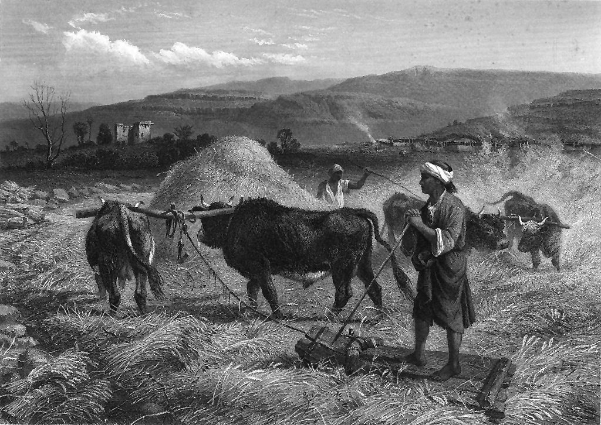

Isaías 41 — La Traducción Mister

El morag del versículo 15 tal como los viajeros todavía lo veían en el siglo XIX: una tabla de madera tachonada por debajo, arrastrada por bueyes sobre las gavillas mientras el conductor va de pie encima para darle peso. El aventar del versículo 16, con el viento llevándose el tamo, es el paso siguiente en la misma era.

Notas del traductor — versículo por versículo
Renueven sus fuerzas. «Guarden silencio ante mí, islas, y renueven sus fuerzas los pueblos»: el capítulo abre como un tribunal, con las costas lejanas mandadas a callar y luego a presentar su causa, «lleguemos juntos al juicio». «Renueven sus fuerzas» es la última promesa del capítulo 40, «los que esperan a Jehová tendrán nuevas fuerzas» (Isaías 40:31, ya en estas páginas); la frase está en dos versículos de la Biblia hebrea, estos dos, y lo que se prometió a los cansados se ofrece ahora a las naciones como desafío. Las iyim, «islas», son las costas e islas del Mediterráneo, el borde del mundo conocido, como en 40:15. El griego tiene «renuévense ante mí, islas, porque los príncipes cambiarán su fuerza». La RV60 tiene «Escuchadme, costas, y esfuércense los pueblos»; la TNM 1987 «recobren el poder los grupos nacionales mismos»; la NVI «¡Naciones, renueven sus fuerzas!».
La justicia lo llama. «¿Quién despertó del oriente a uno? La justicia lo llama a sus pies»: tsédeq yiqraéhu le-ragló. Las palabras admiten «la justicia lo llama a sus pies», un servidor convocado a asistir, o «la victoria le sale al encuentro a cada paso». El capítulo no lo nombra; más adelante en el libro es Ciro, «mi pastor» y «su ungido» (Isaías 44:28; 45:1), el rey persa cuyo decreto pone fin al destierro (Esdras 1:2, ya en estas páginas; Ciro). Josefo dice que Ciro conoció su llamado leyendo el libro que Isaías había dejado doscientos diez años antes (Antigüedades 11.5, numerado 11.1.2 en Whiston). El latín leyó la palabra como una persona, y por eso la Douay inglesa tiene «Who hath raised up the just one from the east», línea leída durante siglos de Cristo; el griego conserva el abstracto «justicia». La RV60 tiene «¿Quién despertó del oriente al justo, lo llamó para que le siguiese»; la TNM 1987 «procedió en justicia a llamarlo a Sus pies»; la NVI «lo llamó en justicia a su servicio».
Una senda que sus pies no han pisado. «Los hace como polvo para su espada, como hojarasca arrebatada para su arco»: la hojarasca que el torbellino se llevó en 40:24. «Los persigue, pasa en paz, por una senda que sus pies no han pisado»: el hebreo es escueto, «una senda con sus pies no llega», o terreno nuevo o una marcha tan rápida que sus pies apenas tocan el camino. La RV60 tiene «pasó en paz por camino por donde sus pies nunca habían entrado»; la NVI «por una senda que nunca antes pisó»; la TNM 1987 «siguió pasando adelante pacíficamente a pie».
El primero, y con los últimos, yo soy él. «¿Quién lo ha obrado y hecho, llamando a las generaciones desde el principio? Yo, Jehová, el primero, y con los últimos, yo soy él»: aní hu, las palabras del cántico de Moisés, «Vean ahora que yo —yo soy él» (Deuteronomio 32:39, ya en estas páginas). Como palabra de Dios sobre sí mismo, aní hu está en siete versículos de la Biblia hebrea: ese del Deuteronomio y seis en Isaías, de los que este es el primero. El griego lo vierte egō eimi, «yo soy», las palabras de Jesús en Juan, «si no creen que yo soy» y «antes que Abrahán fuese, yo soy» (Juan 8:24, 58, ya en estas páginas); y «el primero y el último» es el título del que habla en Apocalipsis, «Yo soy el primero y el último» (Apocalipsis 1:17, ya en estas páginas). La RV60 tiene «Yo Jehová, el primero, y yo mismo con los postreros»; la TNM 1987 «Yo, Jehová, el Primero; y con los últimos soy lo mismo»; la RV 1909 «Yo Jehová, el primero, y yo mismo con los postreros».
Vieron, y temieron. «Las islas lo han visto, y temen»: raú … ve-yiraú, «vieron … y temieron», dos verbos a una letra de distancia. El mismo juego vuelve en el versículo 23, donde el texto escrito tiene «y temeremos» y la lectura es «y veremos». «Los confines de la tierra» son aquellos cuyo Creador es Jehová (40:28). La RV60 tiene «Las costas vieron, y tuvieron temor»; la RV 1909 «Las islas vieron, y tuvieron temor»; la TNM 1987 «Las islas vieron y empezaron a temer».
Sé fuerte. «Cada uno ayuda a su compañero, y dice a su hermano: “¡Sé fuerte!”. Y el artífice fortalece al platero … y lo fortalece con clavos, para que no se tambalee»: las naciones asustadas responden a la citación fabricándose un dios. El verbo es jazaq tres veces, y sigue en la respuesta de Jehová: «a quien tomé» (v9) y «tomo tu mano derecha» (v13) son el mismo verbo. Las naciones fortalecen a su dios con clavos; Jehová toma a su pueblo de la mano. El artífice y el platero son los de 40:19, y «para que no se tambalee» es el ídolo del pobre de 40:20 (todos ya en estas páginas). La RV60 tiene «El carpintero animó al platero» y «lo afirmó con clavos, para que no se moviese»; la TNM 1987 «el artífice se puso a fortalecer al metalario»; la NVI «para que no se tambalee».
Mi siervo, Abraham mi amigo. «Pero tú, Israel, siervo mío, Jacob, a quien he escogido, descendencia de Abraham mi amigo»: es la primera vez en estos capítulos que a Israel se le llama «mi siervo», el título que llevará los pasajes del siervo hasta su cumbre en el capítulo 53 (Isaías 53, ya en estas páginas). «Mi amigo» es ohaví, «el que me ama»: «Abraham, el que me ama» está en un versículo de la Biblia hebrea, y 2 Crónicas 20:7 tiene «Abraham tu amigo». Santiago toma de aquí el título, «y fue llamado amigo de Dios» (Santiago 2:23, ya en estas páginas), y también el Corán llama a Abraham amigo de Dios (4:125). El griego tiene «Abraham, a quien amé». La RV60 tiene «descendencia de Abraham mi amigo»; la TNM 1987 «la descendencia de Abrahán, mi amigo»; la NVI «descendiente de Abraham, mi amigo».
Escogido, no rechazado. «Tú, a quien tomé de los confines de la tierra … te he escogido, y no te he rechazado»: maás, el verbo del rey rechazado (1 Samuel 15:23, ya en estas páginas). El griego de los versículos 8–9, «simiente de Abraham» y «a quien tomé», está detrás de la línea de Hebreos, «toma de la mano a la simiente de Abraham» (Hebreos 2:16, ya en estas páginas). La RV60 tiene «te escogí, y no te deseché»; la TNM 1987 «te he escogido, y no te he rechazado»; la RV 1909 «y de sus principales te llamé».
No mires angustiado a tu alrededor. «No tengas miedo, porque yo estoy contigo; no mires angustiado a tu alrededor, porque yo soy tu Dios»: «no tengas miedo» es la palabra a Abram, «No tengas miedo, Abram» (Génesis 15:1, ya en estas páginas), y a Acaz (Isaías 7:4, ya en estas páginas), y aquí viene tres veces en cinco versículos (vv10, 13, 14). Tishtá es de shaá, mirar alrededor, la mirada de quien busca ayuda en todas direcciones; el mismo verbo vuelve en el versículo 23. «La diestra de mi justicia» responde al versículo 2: la justicia que convoca al conquistador sostiene a Israel. La TNM 1987 tiene «No mires por todos lados, porque soy tu Dios»; la RV60 «no desmayes, porque yo soy tu Dios»; la NVI «no te angusties».
Como nada. «Serán como nada y perecerán los hombres que contienden contigo … como nada y como nulidad»: ayin y efes, las palabras que el capítulo 40 usó de las naciones, «como nada son … como cosa que nada es» (40:17). «Tomo tu mano derecha» invierte la imagen habitual: aquí es Dios quien aferra la mano de su siervo. La RV60 tiene «serán como nada, y como cosa que no es»; la TNM 1987 «como algo inexistente y como nada»; la NVI «como si no existieran».
Gusano Jacob, hombres de Israel. «No tengas miedo, gusano Jacob, hombres de Israel»: toláat, el gusano que crió el maná, y la palabra se vuelve femenina aquí, Jacob tratado como mujer, como Sión en otros lugares de estos capítulos. Metéi Yisrael es «hombres de Israel», pero el sustantivo es el de «pocos en número», metéi mispar, como cuando Jacob dice «yo, siendo pocos en número» (Génesis 34:30) y Moisés advierte «quedarán pocos en número» (Deuteronomio 4:27, los dos ya en estas páginas); el griego tiene «Israel el pequeño». El latín leyó metim, «muertos», y la Douay inglesa tiene «you that are dead of Israel». La RV60 tiene «No temas, gusano de Jacob, oh vosotros los pocos de Israel»; la NVI «pequeño Israel».
Tu Redentor. «Yo te ayudo, declara Jehová, tu Redentor, el Santo de Israel»: goel, el pariente más cercano, cuyo deber es rescatar lo que un pariente pobre ha perdido (Levítico 25:25), el papel que asume Booz (Rut 4, los dos ya en estas páginas). «Tu Redentor» con esta grafía está en siete versículos de Isaías, y este es el primero. «El Santo de Israel» es el título propio de Isaías, aquí tres veces (vv14, 16, 20); está en veinticuatro versículos de Isaías, frente a seis en el resto de la Biblia. La TNM 1987 tiene «aun tu Recomprador, el Santo de Israel»; la RV60 «el Santo de Israel es tu Redentor»; la RV 1909 «y tu Redentor el Santo de Israel».
Un trillo de doble filo. «Mira: te pongo por trillo, afilado, nuevo, de doble filo»: un morag es una tabla pesada tachonada por debajo de piedras o hierro, arrastrada por bueyes sobre las gavillas, como en el grabado de esta página. Báal pifiyot, «dueño de bocas», es «de doble filo», y la palabra está en dos versículos de la Biblia hebrea, aquí y la «espada de dos filos» del Salmo 149:6. El gusano se convierte en el instrumento que muele los montes hasta hacerlos tamo, y luego el torbellino de 40:24 se lleva el tamo. La TNM 1987 tiene «un nuevo instrumento trillador que tiene [dientes] de dos filos»; la RV60 «trillo nuevo, lleno de dientes»; la NVI «una trilladora nueva y afilada, de doble filo».
Los afligidos y los menesterosos. «Los afligidos y los menesterosos buscan agua, y no la hay»: aniyim y evyonim, la pareja del cuidado de la ley por los pobres. El camino de vuelta por el desierto se vuelve tierra de agua: «ríos en las alturas peladas, y manantiales en medio de los valles». Los shefayim son las cumbres desnudas, barridas por el viento, el último lugar donde habría agua. La RV60 tiene «En las alturas abriré ríos»; la TNM 1987 «Sobre colinas peladas abriré ríos»; la NVI «en las cumbres áridas».
Siete árboles. «Pondré en el desierto el cedro, la acacia, el mirto y el árbol de aceite; colocaré en la soledad el enebro, el fresno y el ciprés juntamente»: siete árboles, los cuatro primeros bien conocidos y los tres últimos inciertos. La acacia es la madera del arca (Éxodo 25:10, ya en estas páginas); el mirto vuelve en la promesa de Isaías «en lugar de la ortiga crecerá el mirto» (55:13); el sexto árbol, tidhar, está en dos versículos de la Biblia hebrea, aquí y 60:13, donde se repiten los mismos tres últimos. El griego tiene cinco árboles. La RV60 tiene «cipreses, pinos y bojes juntamente»; la TNM 1987 «el enebro, el fresno y el ciprés»; la RV 1909 «hayas, olmos, y álamos juntamente».
Lo ha creado. «Que la mano de Jehová ha hecho esto, y que el Santo de Israel lo ha creado»: bará, el verbo de «En el principio, Dios creó» (Génesis 1:1, ya en estas páginas), usado aquí de un jardín que crece en el desierto. Los cuatro verbos de ver y saber, «vean y sepan, y consideren y entiendan», terminan en yaskilu, de sakal, tener entendimiento. La RV60 tiene «y que el Santo de Israel lo creó»; la TNM 1987 «y el Santo de Israel lo ha creado él mismo».
El Rey de Jacob. «Presenten su causa, dice Jehová; expongan sus fuertes razones, dice el Rey de Jacob»: el tribunal del versículo 1 escucha ahora a los otros dioses. «El Rey de Jacob» está en un versículo de la Biblia hebrea. Atsumot, «fuertes razones», es de la raíz de la fuerza y del hueso. La RV60 tiene «presentad vuestras pruebas, dice el Rey de Jacob»; la TNM 1987 «Produzcan sus argumentos»; la NVI «demanda el Rey de Jacob».
Las cosas primeras y las venideras. «Las cosas primeras, ¿qué fueron? … o hágannos oír las cosas venideras»: ha-rishonot y ha-baot, la prueba que estos capítulos pondrán una y otra vez: un dios que no puede decir lo que viene no es dios. «Hagan bien o hagan mal, para que miremos angustiados a nuestro alrededor y lo veamos juntamente»: cualquier cosa, como dice Jeremías de los ídolos, que «no pueden hacer mal, ni tienen poder para hacer bien» (Jeremías 10:5). Nishtaá es el verbo del versículo 10, de modo que a los dioses se les pide angustiar a sus adoradores, justo lo que Jehová prohíbe a su siervo. El texto escrito tiene ve-nirá, «y temeremos», leído ve-nireh, «y veremos». La RV60 tiene «o a lo menos haced bien, o mal, para que tengamos qué contar»; la TNM 1987 «para que miremos por todos lados y [lo] veamos al mismo tiempo»; la NVI «llenarnos de terror».
Menos que nada. «Miren: ustedes son menos que nada, y su obra, menos que nulidad; abominación es el que los escoge»: me-ayin, como en 40:17, y me-afa, una palabra que no aparece en ningún otro lugar. La forma está en un versículo de la Biblia hebrea; sus letras forman en otros lugares efé, la víbora (30:6), y muchos la toman por una variante de efes, «nulidad». El griego tiene «¿de dónde son ustedes, y de dónde su obra? De la tierra». «Abominación» es toevá. La RV60 tiene «He aquí que vosotros sois nada, y vuestras obras vanidad»; la TNM 1987 «Ustedes son algo inexistente, y su logro nada es»; la RV 1909 «vuestras obras de vanidad».
Del norte, del nacimiento del sol. «Desperté a uno del norte, y vino; del nacimiento del sol, uno que invoca mi nombre»: el verbo del versículo 2, heír, cierra un marco alrededor del capítulo, y el conquistador viene de las dos direcciones, como Ciro, rey de Media y de Persia. El griego tiene «serán llamados por mi nombre». «Vendrá sobre los gobernadores como sobre lodo, como el alfarero pisa el barro»: seganim, una palabra tomada del acadio para los funcionarios de provincia. El alfarero es el de Jeremías, «como el barro en la mano del alfarero, así sois vosotros en mi mano» (Jeremías 18:6, ya en estas páginas). La RV60 tiene «y pisoteará príncipes como lodo, y como pisa el barro el alfarero»; la TNM 1987 «vendrá sobre los gobernantes diputados»; la NVI «aplasta gobernantes como si fueran barro».
Miren, aquí están. «¿Quién lo anunció desde el principio, para que lo supiéramos? … No hubo quien lo anunciara, no hubo quien lo proclamara, no hubo quien oyera sus palabras. Primero a Sión: “¡Miren, aquí están!”; y a Jerusalén doy un anunciador de buenas nuevas»: rishón le-Tsiyón hinné hinnam, tan comprimido como puede ser el hebreo. La mayoría lo entiende como la afirmación de Jehová de ser el primero en decir a Sión «Miren, aquí están», los desterrados que vuelven. El mevaser, «anunciador de buenas nuevas», es la palabra de 40:9, y la de los pies sobre los montes que cita Pablo (Romanos 10:15, los dos ya en estas páginas; mevaser). El latín tiene evangelistam, y por eso la Douay inglesa lee «to Jerusalem I will give an evangelist». El griego lee «daré a Sión un principio, y consolaré a Jerusalén para el camino». La RV60 tiene «a Jerusalén daré un mensajero de alegres nuevas»; la TNM 1987 «Hay un primero, [que dice] a Sión»; la RV 1909 «un portador de alegres nuevas».
Viento y vacío. «Y miro, y no hay un solo hombre; y entre estos no hay consejero»: los dioses no tienen consejero que dar, y el capítulo 40 preguntaba quién había sido jamás consejero de Jehová (40:13). «Miren: todos ellos son iniquidad; sus obras, nulidad; sus imágenes fundidas, viento y vacío»: aven, iniquidad; efes, nulidad; y tohu, «vacío», como en 40:17 y 40:23, la palabra de la tierra antes del primer día (Génesis 1:2, ya en estas páginas). La RV60 tiene «viento y vanidad son sus imágenes fundidas»; la RV 1909 «He aquí, todos iniquidad»; la TNM 1987 «Sus imágenes fundidas son viento e irrealidad».
Patrones que conviene seguir
Donde esta traducción mantiene las palabras exactas y distintas: «renueven sus fuerzas», como en 40:31; «islas» para iyim, como en 40:15; «La justicia lo llama», sin suplir una persona; «yo soy él» para aní hu, como en Deuteronomio 32:39; «fortalecer» y «tomar» para jazaq; «artífice» y «platero», como en 40:19; «no tengas miedo», como en Génesis 15:1 e Isaías 7:4; «mirar angustiado alrededor» para shaá, en los versículos 10 y 23 por igual; «como nada» y «vacío», como en 40:17; «Redentor» para goel; «hombres de Israel» para metéi Yisrael; y «anunciador de buenas nuevas», como en 40:9.
Ecos pagados. Las fuerzas renovadas, la hojarasca y el torbellino, los fabricantes de ídolos, «como nada» y «vacío», los confines de la tierra y el anunciador de buenas nuevas, todos del capítulo 40; el «no tengas miedo» de Génesis 15 y de Isaías 7; y el «yo soy él» de Deuteronomio 32.
Ecos sembrados. Ciro nombrado (Isaías 44:28; 45:1); el siervo llamado por su nombre (Isaías 42:1); «yo soy el primero y yo soy el último» (Isaías 44:6; 48:12); y los pies del anunciador sobre los montes (Isaías 52:7). Ninguno está todavía en estas páginas.
⚠ Nota sobre el orden: Isaías está en estas páginas en los capítulos 1, 7, 26, 40, 41 y 53. Siguen abiertos Isaías 2–6, 8–25, 27–39, 42–52 y 54–66; lo siguiente en esta parte del libro es Isaías 42 — «He aquí mi siervo, a quien yo sostengo»: el primero de los cánticos del siervo, una caña cascada que no quebrará, y un cántico nuevo a Jehová.